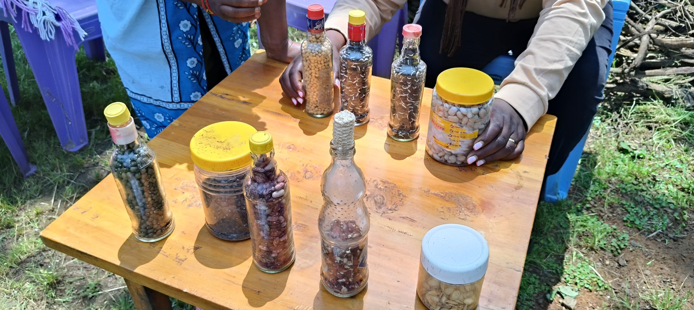
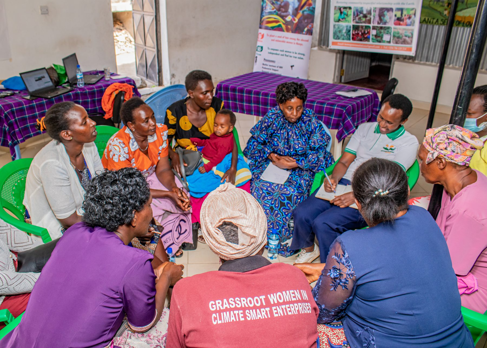
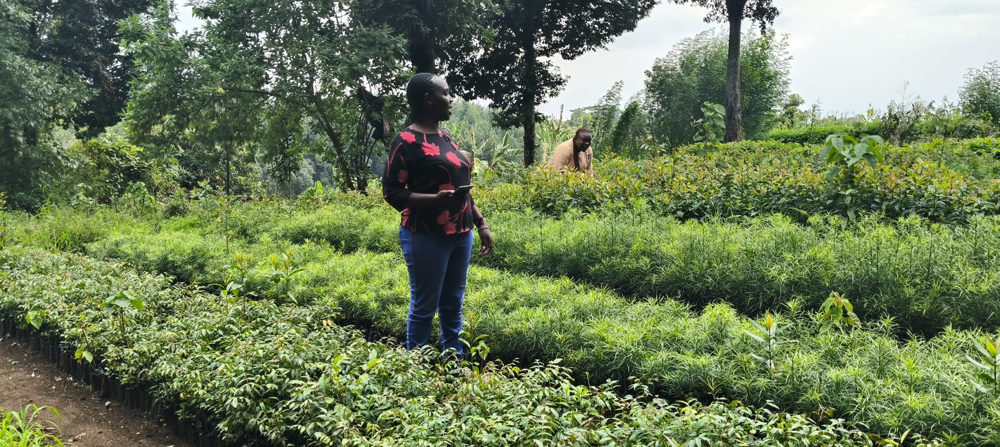
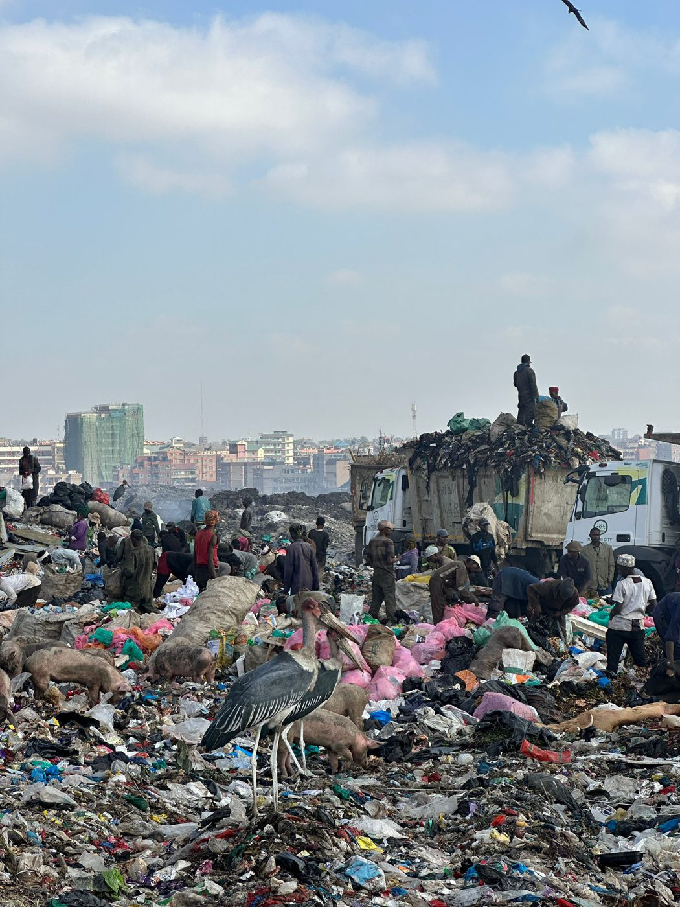

Meet Lydia.
She started saving indigenous seeds with her grandmother. Today she is helping other women establish community seed banks.

The people closest to the solutions guide how Homegrown listens, learns, restores and builds.
Our advisory board grounds Homegrown Sustainability Solutions in lived knowledge, accountability and local leadership. Their role is to keep the work close to community priorities and long-term ecological care.

She started saving indigenous seeds with her grandmother. Today she is helping other women establish community seed banks.

He transformed a degraded farm into a regenerative food system.

She is turning organic waste into an enterprise.